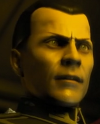
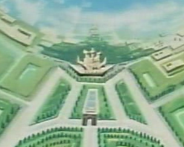
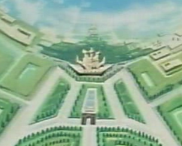

Zum City & New Berlin Zum City & New Berlin
Side 3 Bunch 1, Duchy of Zeon Headquarters Sealed Colony Cluster + Fortress Von Kuspen The center of the Zabis stronghold, and the site of the imperial castle at Zum City, Side 3 Bunch 1 is sparsely populated, used entirely as a political and military center. Zum City has less than one thousand total inhabitants, and while New Berlin is heavily populated, it is used entirely as a mobile suits factory, shipyards and training station and has few civilians. This is the center of Side 3's power, and it looks and feels synonomous with the will of Zeon.  Von Kuspen Major Von Kuspen is one of the higher ups of the SS, and the leader of Zum Cities personal defense forces. He is fanatically loyal, and protects Degwin and the rest of the Zabis with a flare that few can seem to match. However, his personal ability is somewhat suspect, and it is believed that he was chosen for his loyalty above all else. Zum City and New Berlin   
|